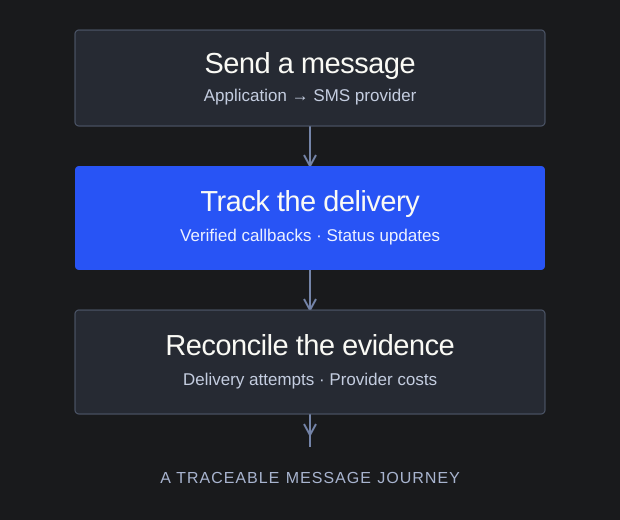

Follow the message
beyond send.
Contributing to a reusable messaging platform that helps applications send SMS and connect delivery status with provider and billing evidence.
- My role
- Software Engineer
- Context
- Team contribution · ESA
- Platform
- Backend · Shared package
The message journey
Sent is only
the beginning.
A send request, a provider callback, and a billing record describe different parts of the same journey. Connecting them makes message delivery easier to understand and investigate.

Illustrative workflow · No message content, recipients, or billing data
My contribution
Visibility after
the API call.
- 01
Delivery tracking
Added delivery and cost instrumentation across the shared SMS service. Connected delivery intents, send attempts, and provider events so applications can query the evidence behind a message's status.
- 02
Verified provider callbacks
Worked on callback signature verification and delivery-state handling, with checks around provider-status evidence and compatibility with existing consumers.
- 03
Cost reconciliation
Built support for reconciling provider and carrier-fee evidence, including adopting existing provider records. Improved how reconciliation handles claimed work and links the result back to delivery attempts.
Engineering focus
One integration.
Many consumers.
A shared package has to evolve without breaking the products that use it. This work combined provider integrations, asynchronous status updates, persistence, and regression coverage at the reusable-service boundary.
TypeScript · Node.js · PostgreSQL · Redis · Twilio
Want to talk through the work?
Get in touch for a conversation about my contribution.